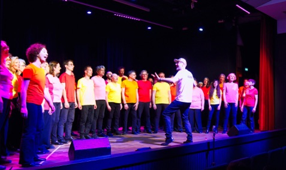

Chœur Icône
Une chorale parisienne depuis septembre 2005 — 21 ans de chansons partagées

Les chansons
Le répertoire est constitué de chansons françaises et internationales. Le programme 2026–2028 sera consacré aux « Protest & Hope Songs ».
Les répétitions
Le chœur répète tous les mardis de 20h00 à 22h00 à Paris dans une salle du 19e arrondissement (métro Stalingrad/Riquet). En plus de la répétition hebdomadaire, le chœur répète un samedi après-midi par trimestre.
L'adhésion
La cotisation permet principalement de payer les frais de photocopie et de location de la salle de répétition, le chef de chœur étant bénévole. Le montant de la cotisation annuelle pour 2026-2027 est fixé à 45 €.
Direction & harmonisation
Yann Couécou dirige et harmonise les chants depuis la création du chœur.
Fondation
Septembre 2005
Le C.A. 2026-2027
Icône est une association loi 1901 administrée par un CA de 13 membres :
Localisation
Paris 19e arrondissement
Métro Stalingrad/Riquet (lignes 2, 5 et 7)
Répétitions
Mardis 20h–22h
+ 1 samedi/trimestre
Cotisation 2026-2027
45 € par an
Chef de chœur bénévole
Contact
Historique des chants depuis 2005
Plus de 100 titres harmonisés et interprétés en 20 ans — certains disponibles en écoute
- A cause des garçons(2007-2008)
- America / West Side Story(2012-2013)
- Amoureuse / Véronique Sanson(2010-2011-2019)
- A woman in love / Barbra Streisand(2018)
- Battez-vous / Brigitte(2018-2019-2024-2025)
- Besoin de personne / Véronique Sanson(2018-2019)
- Bleu comme toi / Étienne Daho(2008-2009)
- California Dreamin' / The Mamas & the Papas(2006-2007-2008-2027)
- Caravane / Raphaël(2024-2025)
- Ce bal est original / Offenbach(2013)
- C'est comme ça / Les Rita Mitsouko(2016-2017)
- Chariot - I Will Follow Him / Petula Clark(2006-2007-2010-2011)
- Chanson populaire / Claude François(2018-2019)
- Combien de temps / Stephan Eicher(2016)
- Conseils de la fée des Lilas / Peau d'Âne(2023-2024)
- Coward / Yaël Naïm(2025-2026)
- Dancing Queen / ABBA(2008-2009-2026)
- Désenchantée / Mylène Farmer(2006)
- Déshabillez-moi / Juliette Gréco(2013-2014)
- Désir, désir / Laurent Voulzy(2007)
- Don't cry for me Argentina / Evita(2011-2012)
- Don't leave me this way / The Communards(2007-2008)
- Double je / Christophe Willem(2009-2010)
- Dusty Men / Saule & Charlie Winston(2024-2025)
- Edelweiss / The Sound of Music(2012-2013)
- Ella, elle l'a / France Gall(2022)
- Enjoy the silence / Depeche Mode(2016-2017)
- Épaule Tattoo / Étienne Daho(2015)
- Eternal Flame / The Bangles(2016-2017)
- Évidemment / France Gall(2022)
- Eye of the Tiger / Survivor(2022-2023)
- Fallait pas commencer / Lio(2008-2009)
- Fanny Ardant et moi / Vincent Delerm(2024-2025)
- Flammes de l'enfer / Niagara(2015-2016)
- Fleur de saison / Émilie Simon(2024-2025)
- Frozen / Madonna(2006-2007)
- Gare de Lyon / Barbara(2014-2015)
- Goodbye Yellow Brick Road / Elton John(2026-2027)
- Grandiose / Pomme(2025)
- Hakuna Matata / Le Roi Lion(2023-2024)
- Hello Dolly / Petula Clark(2011-2012)
- Help! Jude holds your hand / The Beatles(2017)
- Hijo de la luna / Mecano(2017)
- Hope / Gaëtan Roussel(2025-2026)
- Hot Stuff / Donna Summer(2006)
- Hung up / Madonna(2008-2009)
- I Dreamed a Dream / Les Misérables(2013-2014)
- I feel pretty / West Side Story(2012-2013)
- Il est 5 heures, Paris s'éveille / Jacques Dutronc(2014-2015)
- Itsi Bitsi Petit Bikini / Dalida(2010-2011)
- Icône fait son Music-Hall(2013)
- Il était une fois nous deux / Joe Dassin(2018-2019)
- I'll be there / Mariah Carey(2018-2019)
- Il jouait du piano debout / France Gall(2022)
- Il me dit que je suis belle / Patricia Kaas(2007-2008)
- In your eyes / Kylie Minogue(2007-2008)
- I say a little prayer / Aretha Franklin(2009-2010)
- J'ai demandé à la lune / Indochine(2026-2027)
- J'ai deux amours / Joséphine Baker(2013-2014)
- Je dois m'en aller / Niagara(2017-2018)
- J'traîne des pieds / Olivia Ruiz(2025-2026)
- Kids in America / Kim Wilde(2015-2016)
- La chauve-souris / Thomas Fersen(2025-2026)
- La France / Camille(2024-2025)
- La Grenade / Clara Luciani(2025-2026)
- La Grande Zoa / Régine(2013)
- L'Amour en solitaire / Juliette Armanet(2024-2025)
- L'Autre Bout du monde / Emily Loizeau(2024-2025)
- La plus belle pour aller danser / Sylvie Vartan(2006-2007)
- Laissez-moi danser / Dalida(2008-2009)
- La Femme chocolat / Olivia Ruiz(2009-2010)
- La Java bleue / Fréhel(2023)
- La Parisienne / Marie-Paule Belle(2014)
- La Seine / Vanessa Paradis & M(2022-2023)
- La Vie parisienne / Offenbach(2014-2015)
- Le Petit Navire / Daphné(2025-2026)
- Les Champs-Élysées / Joe Dassin(2014-2015)
- Les Uns contre les autres / Fabienne Thibault(2022)
- Les Vendanges de l'amour / Marie Laforêt(2007-2011)
- Les Voisines / Renan Luce(2010-2011)
- Like a prayer / Madonna(2015-2016)
- Love is all / Roger Glover(2018-2019)
- Love today / Mika(2018-2019)
- Made in Normandie / Stone & Charden(2009-2010)
- Mamma mia / ABBA(2011-2012)
- Manureva / Alain Chamfort(2026-2027)
- Marcia Baïla / Les Rita Mitsouko(2026-2027)
- Ma vie en l'air / Jeanne Cherhal(2023-2024)
- Medley Daho(2016)
- Moi Lolita / Alizée(2007-2008)
- My fair Gigi Poppins / Medley(2012-2013)
- Ne m'oublie pas / La Grande Sophie(2025-2026)
- New York, New York / Liza Minnelli(2011-2012-2013)
- Night Fever / Bee Gees(2022-2023)
- Nini, peau d'chien / Patachou(2013-2014)
- Non, Non, Non (écouter Barbara) / Camélia Jordana(2024-2025)
- Nous voyageons de ville en ville / Les Demoiselles de Rochefort(2011-2012)
- Oh, Pretty Woman / Roy Orbison(2023-2024)
- Ouragan / Stéphanie(2006-2007)
- Over the rainbow / Judy Garland(2011-2012)
- Papa, t'es plus dans le coup / Sheila(2022-2023)
- Paris / Camille(2014)
- Paris en colère / Mireille Mathieu(2014-2015)
- Parle-moi / Isabelle Boulay(2025)
- Partenaire particulier(2016-2017)
- Pour un infidèle / Cœur de Pirate & Julien Doré(2024-2025)
- Puisque tu pars / Jean-Jacques Goldman(2026-2027)
- Rasputin / Boney M(2017-2018)
- Reality / Richard Sanderson(2022)
- Rendez-nous la lumière / Dominique A(2025-2026)
- Résiste / France Gall(2015-2016)
- Respire encore / Clara Luciani(2022-2023)
- Rien que de l'eau / Véronique Sanson(2022)
- River deep, mountain high / Ike & Tina Turner(2018-2019)
- Ruby Tuesday / The Rolling Stones(2017-2018)
- Shallow / Lady Gaga & Bradley Cooper(2023-2024)
- Somewhere / West Side Story(2012-2013-2022-2023)
- Sous le ciel de Paris / Édith Piaf(2014-2015)
- Sous le soleil de Bodega(2010)
- Summer Nights / Olivia Newton-Jones & John Travolta(2019-2022-2023)
- Tchiki Boum / Niagara(2008-2009)
- T'en va pas / Elsa(2010-2011)
- Tes États d'âme, Eric / Luna Parker(2015-2016-2017)
- There must be an angel / Eurythmics(2009)
- There's No Business Like Show Business / Ethel Merman(2023-2024)
- The Shoop Shoop Song / Cher(2009-2010)
- The Sound of Music / Medley(2011-2012)
- The Sun Always Shines on TV / A-Ha(2026-2027)
- Tous les garçons et les filles / Françoise Hardy(2009-2010)
- Tout, tout pour ma chérie / Michel Polnareff(2018-2019)
- Toxic / Britney Spears(2026-2027)
- Troisième Sexe / Indochine(2016-2017)
- Two Little Girls from Little Rock / Marilyn Monroe & Jane Russell(2023-2024)
- Un autre monde / Téléphone(2015)
- Un morceau de sucre / Julie Andrews(2022-2023)
- Vanina / Dave(2006-2007)
- Viens, je t'emmène(2022)
- Voyage, Voyage / Désireless(2015-2016)
- We are the champions / Queen(2017-2018)
- We are the world / USA for Africa(2015-2016)
- We Don't Need Another Hero / Tina Turner(2022-2023)
- What a Feeling / Irene Cara(2011-2012-2022-2023)
- Willkommen - Cabaret / Liza Minnelli(2012-2013)
- Y'a d'la haine / Les Rita Mitsouko(2009)
- Yesterday / The Beatles(2017-2018)
- YMCA / Village People(2017-2018)
- You Can't Stop The Beat / Hairspray(2023-2024)
- You're the one that I want / John Travolta & Olivia Newton Jones(2011-2012)
- You can't hurry love / The Supremes(2017-2018)